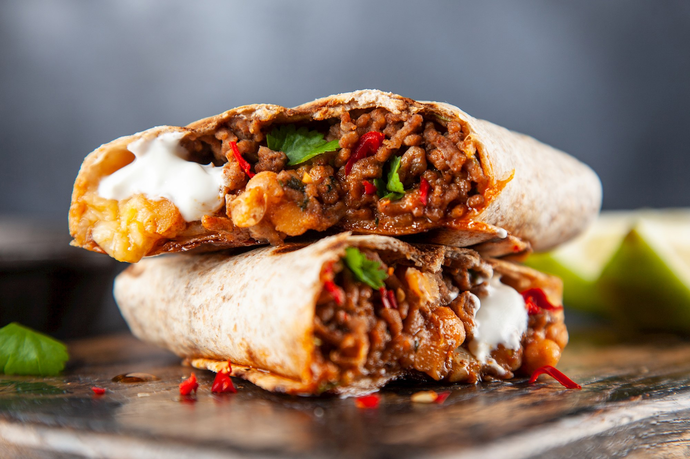

 30 min.
30 min.
 normal
normal
 26.05.2024
26.05.2024
Zutaten:
Nährwerte pro Portion:
Zubereitung:
Arbeitszeit ca. 30 min.
Koch-/Backzeit ca. 20 Minuten
Gesamtzeit ca. 50 Minuten
Die Tomaten fein hacken und wieder in den Saft zurückgeben. Den Mais auf einem
Sieb abtropfen lassen. Die Paprikaschoten putzen, entkernen, waschen, trocknen
und in kleine Stücke schneiden. Die Zwiebeln schälen und würfeln.
Das Olivenöl in einer Pfanne erhitzen und das Hackfleisch darin scharf anbraten. Zwiebeln und Paprika dazugeben und alles etwa 5 Minuten garen, bis das Fleisch durchgebraten ist. Mit Salz, Pfeffer, Cayennepfeffer und Kreuzkümmel kräftig würzen Das Tomatenmark dazugeben, kurz mitrösten, dann die gehackten Tomaten mit dem Saft und den Mais unterrühren. Die Masse einige Minuten einkochen lassen, bis fast die gesamte Flüssigkeit verdampft ist.
Mit den Gewürzen und etwas Zucker abschmecken. Die Tortillas mit der Crème fraîche bestreichen und die Hackfleischmasse gleichmäßig darauf verteilen. Mit etwas geriebenem Käse bestreuen. Die Tortillas zu Burritos aufrollen und in eine Auflaufform legen. Mit dem restlichen geriebenen Käse bestreuen.
Bei 200 °C Ober-/Unterhitze im vorgeheizten Backofen ca. 4 - 5 Minuten überbacken, bis der Käse zerlaufen ist. Sofort servieren.
Das Olivenöl in einer Pfanne erhitzen und das Hackfleisch darin scharf anbraten. Zwiebeln und Paprika dazugeben und alles etwa 5 Minuten garen, bis das Fleisch durchgebraten ist. Mit Salz, Pfeffer, Cayennepfeffer und Kreuzkümmel kräftig würzen Das Tomatenmark dazugeben, kurz mitrösten, dann die gehackten Tomaten mit dem Saft und den Mais unterrühren. Die Masse einige Minuten einkochen lassen, bis fast die gesamte Flüssigkeit verdampft ist.
Mit den Gewürzen und etwas Zucker abschmecken. Die Tortillas mit der Crème fraîche bestreichen und die Hackfleischmasse gleichmäßig darauf verteilen. Mit etwas geriebenem Käse bestreuen. Die Tortillas zu Burritos aufrollen und in eine Auflaufform legen. Mit dem restlichen geriebenen Käse bestreuen.
Bei 200 °C Ober-/Unterhitze im vorgeheizten Backofen ca. 4 - 5 Minuten überbacken, bis der Käse zerlaufen ist. Sofort servieren.